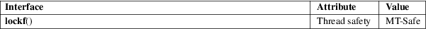

lockf − apply, test or remove a POSIX lock on an open file
Standard C library (libc, −lc)
#include <unistd.h>
int lockf(int fd, int cmd, off_t len);
Feature Test Macro Requirements for glibc (see feature_test_macros(7)):
lockf():
_XOPEN_SOURCE >= 500
|| /* glibc >= 2.19: */ _DEFAULT_SOURCE
|| /* glibc <= 2.19: */ _BSD_SOURCE || _SVID_SOURCE
Apply, test, or remove a POSIX lock on a section of an open file. The file is specified by fd, a file descriptor open for writing, the action by cmd, and the section consists of byte positions pos..pos+len−1 if len is positive, and pos−len..pos−1 if len is negative, where pos is the current file position, and if len is zero, the section extends from the current file position to infinity, encompassing the present and future end-of-file positions. In all cases, the section may extend past current end-of-file.
On Linux, lockf() is just an interface on top of fcntl(2) locking. Many other systems implement lockf() in this way, but note that POSIX.1 leaves the relationship between lockf() and fcntl(2) locks unspecified. A portable application should probably avoid mixing calls to these interfaces.
Valid operations are given below:
|
F_LOCK |
Set an exclusive lock on the specified section of the file. If (part of) this section is already locked, the call blocks until the previous lock is released. If this section overlaps an earlier locked section, both are merged. File locks are released as soon as the process holding the locks closes some file descriptor for the file. A child process does not inherit these locks. |
F_TLOCK
Same as F_LOCK but the call never blocks and returns an error instead if the file is already locked.
F_ULOCK
Unlock the indicated section of the file. This may cause a locked section to be split into two locked sections.
|
F_TEST |
Test the lock: return 0 if the specified section is unlocked or locked by this process; return −1, set errno to EAGAIN (EACCES on some other systems), if another process holds a lock. |
On success, zero is returned. On error, −1 is returned, and errno is set to indicate the error.
EACCES or EAGAIN
The file is locked and F_TLOCK or F_TEST was specified, or the operation is prohibited because the file has been memory-mapped by another process.
|
EBADF |
fd is not an open file descriptor; or cmd is F_LOCK or F_TLOCK and fd is not a writable file descriptor. |
EDEADLK
The command was F_LOCK and this lock operation would cause a deadlock.
|
EINTR |
While waiting to acquire a lock, the call was interrupted by delivery of a signal caught by a handler; see signal(7). | ||
|
EINVAL |
An invalid operation was specified in cmd. | ||
|
ENOLCK |
Too many segment locks open, lock table is full. |
For an explanation of the terms used in this section, see attributes(7).

POSIX.1-2008.
POSIX.1-2001, SVr4.
fcntl(2), flock(2)
locks.txt and mandatory−locking.txt in the Linux kernel source directory Documentation/filesystems (on older kernels, these files are directly under the Documentation directory, and mandatory−locking.txt is called mandatory.txt)